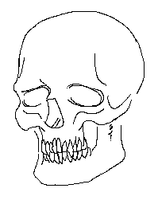

Ever since I was a young boy I've always loved scifi media, especially the cyberpunk and scifi-horror subgenres (yeah I watched stuff like that as a kid, shut up). This course caught my eye because I've been intrigued for quite some time now by mods people create for games and the code that goes into making them, particularly the mods for the older installments of the venderable Doom series. I've admittedly been fantasising for quite some time now about creating my own mods for these games, the amount of love and expertise I've seen put into some them is nothing but inspiring and heartwarming. Also coding just seems like a really valuable skill these days.
Here's a list of a few of the scifi related things I like, if you are so inclined:
I also like to draw a little bit here and there too. My skills are kinda lacking, especially in the coloring area but I would love to improve my skills and combine them with the coding skills I'm learning to create stuff in the future.
Here's a skull I was doodling in MS paint while I was stuck for what to do for this website: 